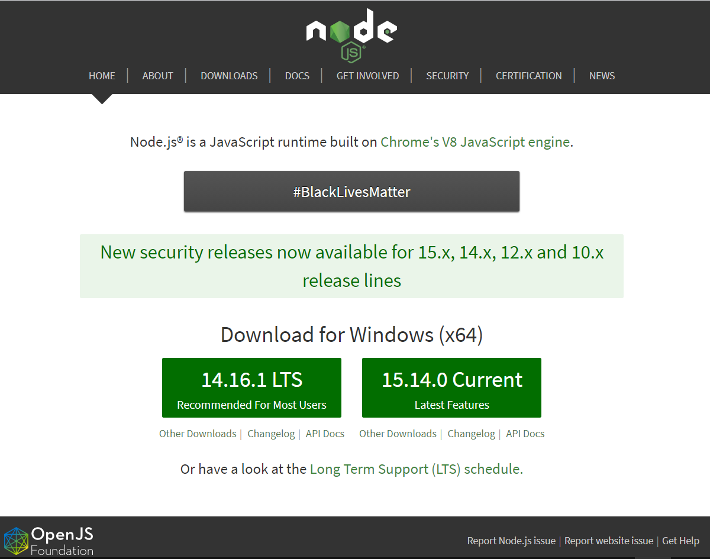

Установка Node.js
Устанавливаем программную платформу Node.js, для того чтобы дать JavaScript возможность взаимодействовать с устройствами ввода-вывода через свой API и подключать разные внешние библиотеки.
Перейдем к установке Node.js. Для Windows есть только один способ.
Необходимо перейти на официальный сайт https://nodejs.org и на главной странице скачать последнюю стабильную версию.
После загрузки инсталлятор следует запустить и установить Node.js, как любую другую программу.
Убедимся, что всё установилось. Для этого в командной строке проверим версию Node.js с помощью следующих команд:
node -v
nmp -v
Результат выполнения команд:
Если результат выполнения команд в консоли схож с данным, то вы всё сделали правильно, Node.js установлен и функционирует правильно.